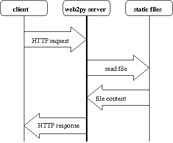

Static HTML message exchange diagram

HTTP request
http://cdoku.seng.uvic.ca:8080/cqg/static/codeact.html
The string
static
in the URL tells web2py to retrieve a static HTML page.
read file
read the requested file:
static/codeact.html
HTTP response
the web2py server sends the contents of
codeact.html
as an HTTP response to the client